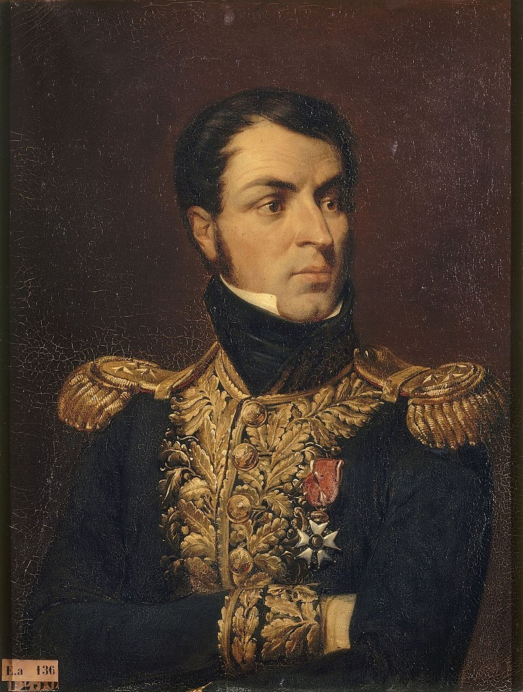
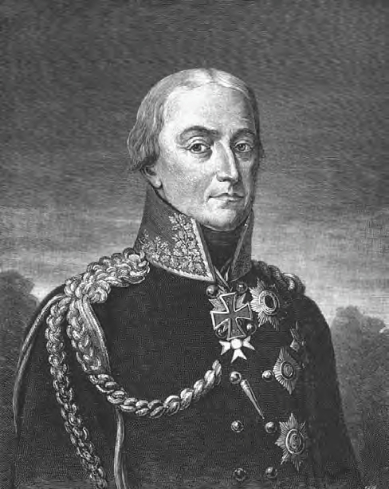
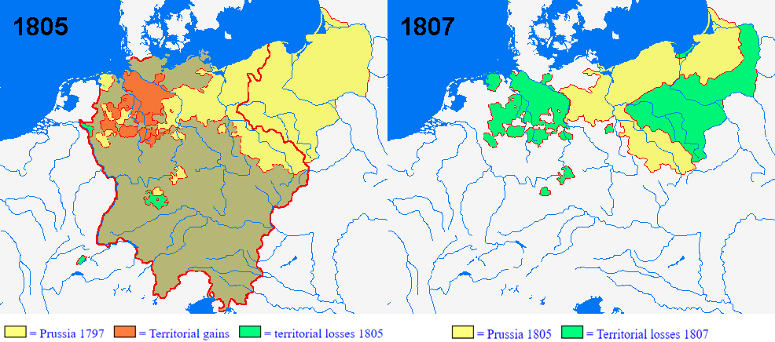

정의 같은 소리하고 있네 - 마침내 맺은 칼리쉬 (Kalisch) 조약
게시: 2022-04-25T06:30:02+09:00
레이니에의 군단이 글로가우에 들어가지 못하도록 막아달라는 알렉산드르의 긴급 요청에 대해 프리드리히 빌헬름이 쓴 편지의 내용은 기가 막힌 것이었습니다. 긴 문장을 요약하면 아래와 같았습니다. 1) 슐레지엔은 나폴레옹이 인정한 중립지대이다. 레이니에에게도 그 중립 존중과 함께 글로가우에 들어가지 말라고 요청했으니, 러시아군도 슐레지엔의 중립을 존중해주시길 바란다. 2) 나폴레옹은 프로이센에게 러시아와 싸워줄 것을 요청했고, 국왕인 나는 그러기 위한 조건으로 9,800만 프랑과 영토 회복을 요구했는데 거절당했다. 3) 내가 이런 이야기까지 다 하는 것은 내가 프랑스와 전쟁에 돌입하더라도 정당성은 내게 있다는 것과 내가 러시아 측에게 아무것도 감추지 않는다는 것을 입증하기 위함이다. 알렉산드르는 이 한심한 편지를 받고 기가 막혔습니다. 그는 정중하지만 짜증을 뚜렷이 드러내는 편지를 다시 보내여 '지금 일분일초가 아까운 시기에 이게 뭐하는 짓인가, 러시아의 적과 손잡고 러시아를 침공한 프로이센에게 우리가 이렇게 아량을 베풀어주는데도 이런 정당성 운운하는 선비질만 할 것인가'라는 뜻을 전했습니다.

(결국 초상화 속의 레이니에 장군은 무사히 글로가우에 입성했습니다. 레이니에와 그의 작센 군단은 나중에 나폴레옹의 주력군과 합류하여 라이프치히 전투에까지 참전합니다만, 레이니에가 떠난 이후에도 글로가우에는 9천의 수비대가 남아 농성을 계속 했습니다. 결국 이들은 숫자가 1천8백까지 줄어들 때까지 항전을 계속하다가 1814년 4월 10일에야 항복했습니다.) 한편, 프랑스군의 전면적인 후퇴와 함께 프로이센과의 협력이 가시화되면서, 군사적으로도 러시아군은 이제 공세로 나갈 수 있게 되었습니다. 쿠투조프는 레이니에의 잔존병력이 후방에 배치되어 있던 오쥬로(Pierre Augereau)의 군단과 합류를 하더라도 1만7천이 넘지 않는다고 보았고, 따라서 슈테틴과 프랑크푸르트-암-오데르 사이의 오데르 방어선에 펼쳐진 프랑스측 병력은 약 4만 정도로 보았습니다. 여기에 프로이센군이 합류하면 상황은 더욱 유리해진다고 보았습니다. 쿠투조프는 단치히 포위에 병력을 할당하느라 줄어든 비트겐슈타인의 병력에 동프로이센에 배치되었던 프로이센 수비대 지휘관 뷜로(Friedrich Wilhelm Freiherr von Bülow)의 1만과, 이미 러시아 측에 붙은 요크의 2만, 총 3만의 프로이센군을 더해 오데르 강을 건너도록 지시했습니다. 그는 비트겐슈타인이 슈테틴과 퀴스트린 사이의 공간으로 침투하여 베를린으로 진격하고, 중앙군은 남동쪽에서 올라올 프리드리히 빌헬름의 프로이센 본대과 함께 작센의 주요 도시인 라이프치히와 드레스덴으로 진격할 것을 계획했습니다. 그러나 프리드리히 빌헬름이 꾸물거리느라 모든 계획이 틀어졌습니다. 고지식한 요크와 뷜로우가 국왕의 재가 없이는 오데르는 커녕 비스와 강을 건널 수 없다고 강경한 입장을 고수했는데 도대체 프리드리히 빌헬름은 어느 편에 설지 결정을 내리지 않고 있었던 것입니다. 느리기로는 둘째가라면 서러웠던 쿠투조프도 프리드리히 빌헬름에게는 두손두발 다 들 수 밖에 없었습니다. 마침 러시아군도 겨우내내 강행군으로 지쳐 있었던데다, 쿠투조프 자신도 건강이 급격히 악화되었으므로 그는 오데르 강을 넘는 진격을 포기하고 얼마 남지 않은 겨울을 휴식하며 보내기로 하고 전군에게 장기 숙영 명령을 내렸습니다.

(뷜로입니다. 그는 당시 58세였는데 매우 강경한 프로이센 민족주의자였고, 그런 경향은 그가 속한 연대가 1806년 제4차 대불동맹전쟁 때 동원되지 않는 바람에 예나-아우어슈테트 전투에 참전하지 못하면서 더욱 강해졌습니다. 거기에 1806년 와이프와 두 아이를 잃는 개인적 불행을 겪으면서 그는 더욱 우울해졌고 그의 과격한 민족주의 성향은 선을 넘는 정도가 되었습니다. 결국 그 못지 않은 강경파였던 블뤼허와도 충돌한 뒤 퇴역해버리는 지경까지 갔습니다. 그러나 1808년 당시 18살에 불과했던 처제와 결혼하는 만행을 저지르면서 성격이 많이 누그러졌고 1811년 군직에도 복귀했습니다. 그는 워털루 전투에서도 가장 치열하게 싸운 프로이센 부대의 지휘관이었습니다만, 불행히도 1816년 2월, 원래 임지인 쾨니히스베르크로 돌아오자마자 급사했습니다.) 쿠투조프는 이렇게 하면서도 프로이센과 러시아 간에 곧 동맹이 체결될 것임을 믿어 의심치 않았습니다. 그래서 2월 21일 편지를 보내 비트겐슈타인에게는 숙영 기간 중에도 유격병들을 오데르 강 너머로 보내 탐색을 계속 하다가 프로이센과의 동맹이 맺어지는 즉시 베를린을 향해 진격하도록 명령했습니다. 하지만 프리드리히 빌헬름의 꾸물거림은 쿠투조프와 같은 느림보의 상식마저도 뛰어넘는 것이었습니다. 그는 이후에도 11일 간이나 아무 결정을 내리지 않고 협상을 계속했습니다. 그런데 알고 보면 이렇게까지 막판 협상이 길어진 것이 프리드리히 빌헬름 탓만은 아니었습니다. 협상의 핵심에는 프로이센의 영토였다가 1807년 틸지트 조약에서 빼앗긴 옛 프로이센령 폴란드 영토 문제가 있었습니다. 그 땅의 대부분은 바르샤바 공국이 되었지만 일부는 러시아에게로 넘어가기도 했습니다. 프로이센은 그 영토를 되돌려 달라고 징징대고 있었고, 편지 끝부분마다 '모든 것은 주님의 뜻대로'라며 항상 종교적인 의무감으로 나폴레옹과 싸우겠다던 알렉산드르도 이 영토 문제에 대해서는 아주 단호했습니다. 러시아의 입장은 당연히 바르샤바 공국 전체가 모조리 러시아 영토가 되어야 한다는 것이었습니다. 이는 1813년 지금 전쟁을 벌이는 이유가 유럽의 질서를 1789년 이전으로 되돌리는 것이라는 알렉산드르 본인의 입장과도 정면으로 배치되는 것이었습니다. 하지만 아무 상관없었습니다. 국제 관계란 프리드리히 빌헬름과의 생각과는 달리 정의나 정당성으로 결정되는 것이 아니라 힘으로 결정되는 것이었으니까요.

(1805년의 프로이센 영토와 1807년 틸지트 협정 이후의 영토를 비교해 보십시요. 지도자가 결정을 잘못 내리면 정말 참담한 결과가 나온다는 매우 좋은 예입니다.) 결국 주님이고 정의고 다 필요 없었고, 황제와 왕의 합의는 매우 장사꾼처럼 이루어졌습니다. 옛 프로이센 영토이던 바르샤바 공국은 모조리 러시아가 흡수하되, 대신 서쪽의 다른 독일 소국들, 가령 작센 왕국의 영토를 뚝 떼어 프로이센에게 보상으로 주겠다는 것이었습니다. 또한 폴란드가 통째로 러시아 땅이 되더라도, 서프로이센 본토와 슐레지엔을 연결할 통로는 남겨주겠다고도 약속을 했습니다. 대신 프로이센은 총 8만의 병력을 러시아의 원정군 15만에게 보태주기로 했습니다. 이는 결국 프로이센 농민들의 피를 팔아서 호헨촐레른 가문이 땅을 사는 협상이었습니다. 또한 두 국가는 절대 단독으로 나폴레옹과 평화협정을 맺지 않기로 했는데, 이는 전황이 불리하게 돌아간다 싶으면 어김없이 혼자 강화조약을 맺고 동쪽 멀리 본국으로 도망쳐버리던 러시아를 묶어두기 위한 조항이었습니다. 이렇게 구체적인 조항들이 협의되자, 2월 26일 프로이센 국방부 장관인 샤른호스트가 말을 달려 알렉산드르와 쿠투조프의 사령부가 있는 칼리쉬로 왔고, 드디어 2월 28일 칼리쉬 조약을 맺고 프로이센-러시아가 정식 군사동맹이 되었습니다. 이제 고결한 군주들의 정의로운 동맹이 맺어졌으니 남은 것은 승리와 영광 뿐이었을까요? 천만에 콩떡이었고 이제부터 진짜 문제가 드러나기 시작했습니다. Source : The Life of Napoleon Bonaparte, by William Milligan Sloane Napoleon and the Struggle for Germany, by Leggiere, Michael V
https://en.wikipedia.org/wiki/Friedrich_Wilhelm_Freiherr_von_B%C3%BClow https://www.tacitus.nu/historical-atlas/prussia2.htm